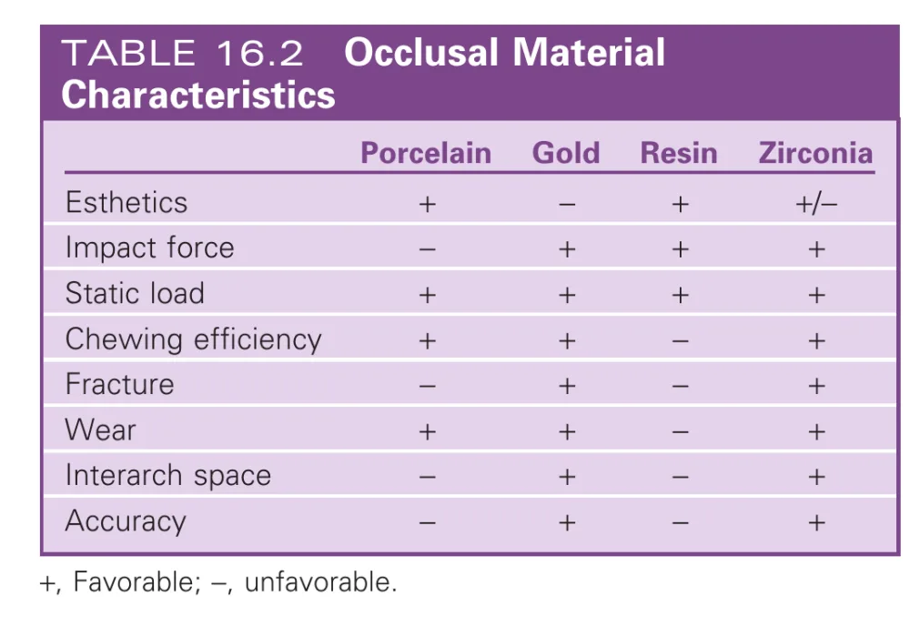
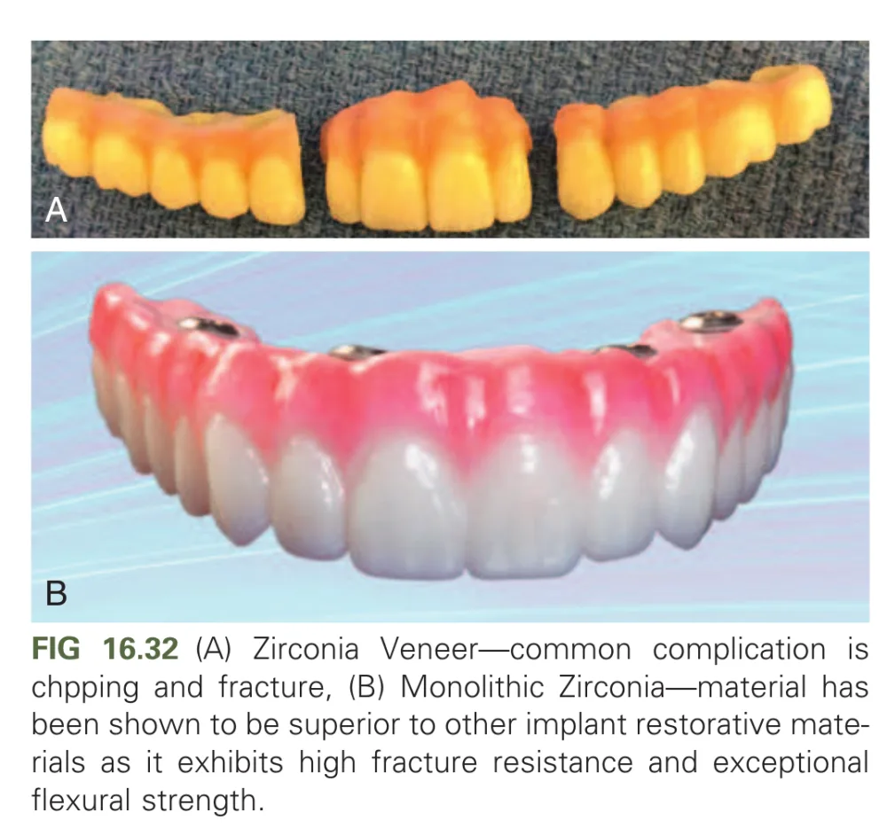

نسخه استخراجشده؛ ترجمه یا تأیید علمی انجام نشده است. وضعیت: captured
چهار مادهی اکلوزال در هشت شاخص، با علامت + برای مساعد و − برای نامساعد:
و اکنون خواندن درست این مقایسه: طلا در هر هشت شاخص + میگیرد، جز یکی — زیبایی. و زیرکونیا در هفت شاخص + میگیرد و در زیبایی +/−.
یعنی این مقایسه یک پیام روشن دارد: از دید مکانیکی، طلا و زیرکونیا در هیچ شاخصی نامساعد نیستند؛ طلا تنها در زیبایی کم میآورد و زیرکونیا در زیبایی علامت میانه دارد. پرسلن و رزین برای زیبایی، بخشی از مکانیک را از دست میدهند.
و پرسلن، که رایجترین است، در چهار شاخص − میگیرد: نیروی ضربهای، شکست، فضای بینقوسی، و دقت. و توجه کن که «نیروی ضربهای» و «شکست» هر دو منفیاند — که دقیقاً با آنچه درس پیش گفت میخواند: نبود تسکین تنش پریودنتال، نیروی ضربهای را بالا میبرد، و پرسلن همانجا ضعیف است.
و رزین در پنج شاخص − میگیرد — کارایی جویدن، شکست، سایش، فضای بینقوسی، و دقت — و تنها در زیبایی، نیروی ضربهای و بار استاتیک مثبت است.
یک نکتهی ظریف: رزین در «نیروی ضربهای» مثبت است ولی در «شکست» منفی. تناقض نیست: رزین ضربه را جذب میکند (چون نرم است) ولی در برابر شکست مقاوم نیست. جذب ضربه با مقاومت به شکست یکی نیست.
و «فضای بینقوسی» شاخصی است که اغلب نادیده میماند: پرسلن و رزین هر دو − میگیرند چون به ضخامت نیاز دارند. در فضای تنگ، طلا و زیرکونیا گزینههای واقعیاند. این مستقیماً با بحث فضای ارتفاع تاج در یونیتهای پیش گره میخورد.

پیشگیری با یک انتقاد آغاز میشود:
«یک درمان رایج که بیش از همه کماستفاده میشود، بهکارگیری گاردهای اکلوزال است. بهشدت توصیه میشود که همهی بیمارانی که علائم پارافانکشن نشان میدهند و نیز موقعیتهای پروتزی مستعد شکست — یعنی پروتز ایمپلنت در برابر پروتز ایمپلنت — با گارد اکلوزال درمان شوند.»
به آن قید دوم دقت کن، چون یک اندیکاسیون مستقل است: پروتز ایمپلنت در برابر پروتز ایمپلنت، حتی بدون پارافانکشن، خودش یک وضعیت پرخطر است — چون هیچیک از دو طرف لیگامان پریودنتال ندارد که ضربه را جذب کند. دو سطح رِیجید روبهروی هم.
و اکنون عدد کلیدی این درس:
«ضخامت ایدهآل پرسلن برای به حداقل رساندن احتمال شکست، تقریباً ۲ میلیمتر است.»
و مشکلی که این عدد را نقض میکند: «وقتی سوپراستراکچر فلزی درست طراحی نشده باشد، نواحی پرسلن بدون تکیهگاه ممکن است پدید آید. این بهویژه در پروتزهای FP-2 یا FP-3 صادق است، بهدلیل حجم بزرگ فلز و پرسلنشان.»
و اکنون یک خطای رایج آزمایشگاهی:
«بسیاری از آزمایشگاههای دندانپزشکی کوپینگهای فلزی نازکی روی ایمپلنتها و دندانها میسازند و سپس پرسلن را تا کانتور نهایی و میز اکلوزال اضافه میکنند. در نتیجه، ترمیمهای FP-2 یا FP-3 ممکن است پرسلن بدون تکیهگاه بسیار بیشتری (بیش از ۲ میلیمتر) داشته باشند.»
و راهحل، یک وارونه کردن ترتیب است:
«برای محدود کردن مقدار پرسلن بدون تکیهگاه، لبهی انسیزال و موقعیت میز اکلوزال پروتز باید پیش از ساخت سوپراستراکچر فلزی برنامهریزی شود. سپس تکنسین میتواند یک وکسآپ تمامکانتور از پروتز نهایی بسازد و پس از آن کانتور را ۲ میلیمتر در نواحیای که پرسلن قرار است اضافه شود کاهش دهد.»
و خطای رایج در یک جمله: «یک خطای رایج این است که نخست فریمورک فلزی ساخته شود و سپس موقعیت انسیزال تعیین شود.»
چرا این ترتیب اهمیت دارد؟ اگر فلز اول ساخته شود، شکل نهایی دندان باید روی آن ساخته شود — و هرجا که فلز کوتاه آمده باشد، پرسلن بدون تکیهگاه پر میکند. اگر شکل نهایی اول تعیین شود، فلز میتواند دقیقاً ۲ میلیمتر زیر آن دنبال شود و هیچ نقطهای بدون تکیهگاه نماند.
و این همان الگویی است که در کل مسیر بارها دیدهای: در یونیت ماگزیلای بیدندان خواندی که «فرم قوس را دنتیشن نهایی تعیین میکند، نه ریج». اینجا هم همان اصل، در مقیاس آزمایشگاهی: از نتیجهی نهایی به عقب طراحی کن، نه از زیرساخت به جلو.
و بند «کاهش نیرو» که پیش از همهی اینها میآید: «ایمپلنتها، اجزا و پروتز در معرض بارهایی با دامنهی گستردهای از بزرگی، مدت، جهت و فرکانس قرار میگیرند. در نتیجه، تغییر شکل دائمی ممکن است رخ دهد، و شکست خستگی و خزش پس از سالها عملکرد نتیجهگیریهای مورد انتظارند.»
به آن عبارت دقت کن — «نتیجهگیریهای مورد انتظار». شکست خستگی و خزش را باید از پیش انتظار داشت؛ با گذشت زمان رخ میدهند. کار پزشک به تعویق انداختن آن است، نه انکارش. و همانطور که در یونیت اتچمنتها دیدی، این نگاه، برنامهی نگهداری میسازد نه وعدهی بیعارضگی.
